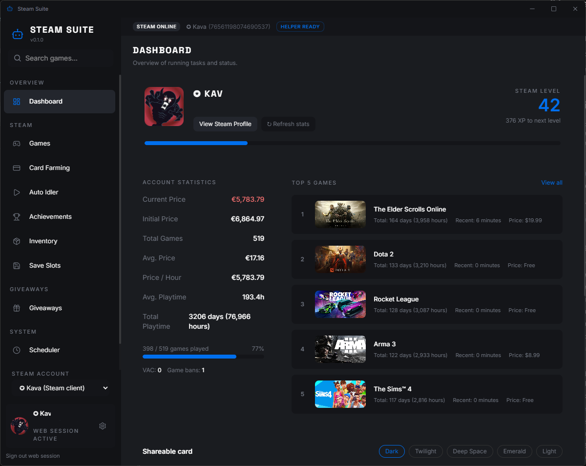
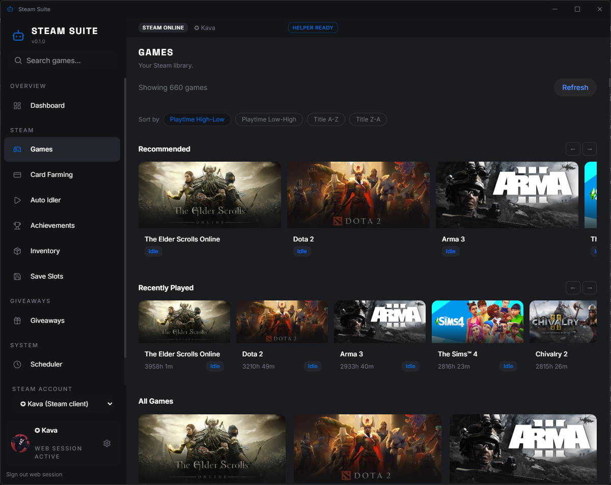
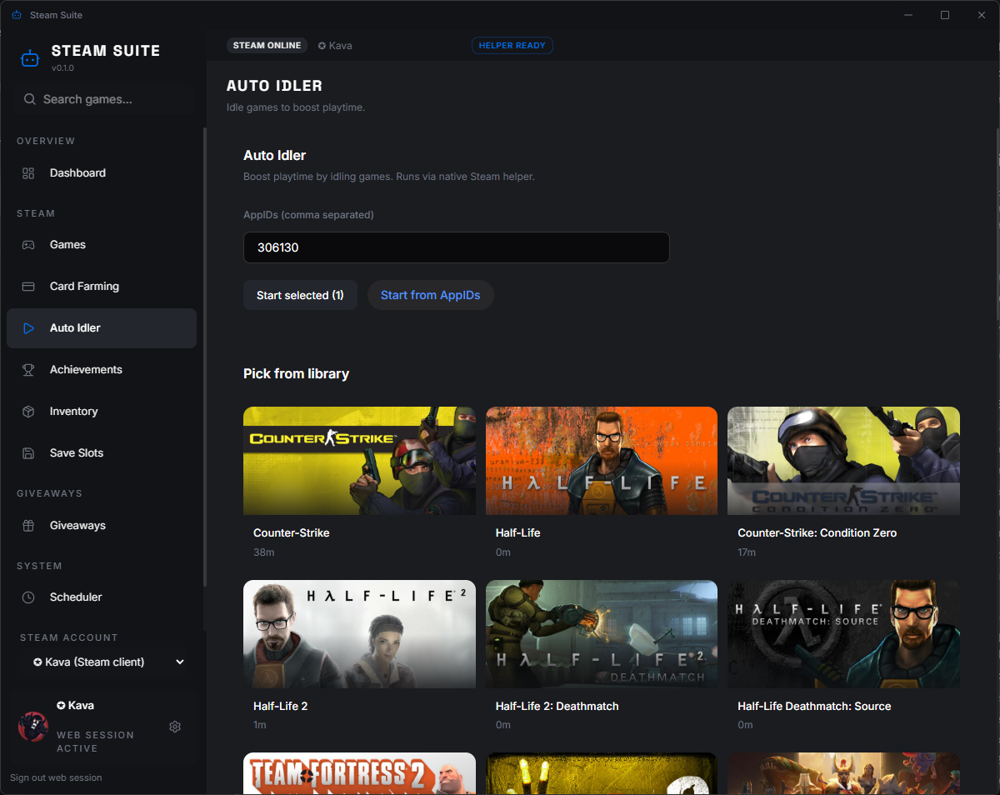
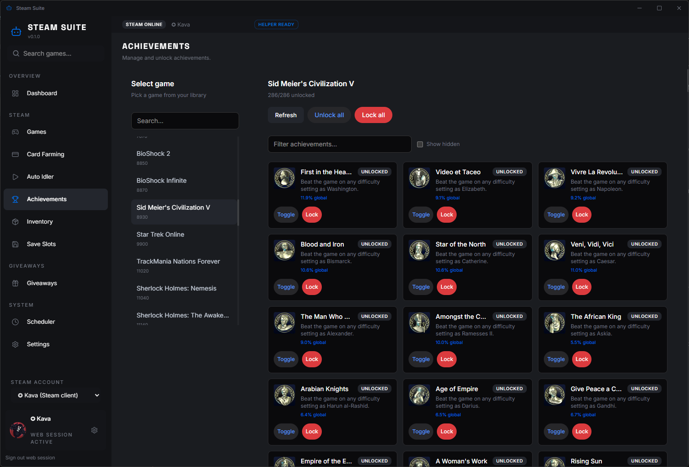
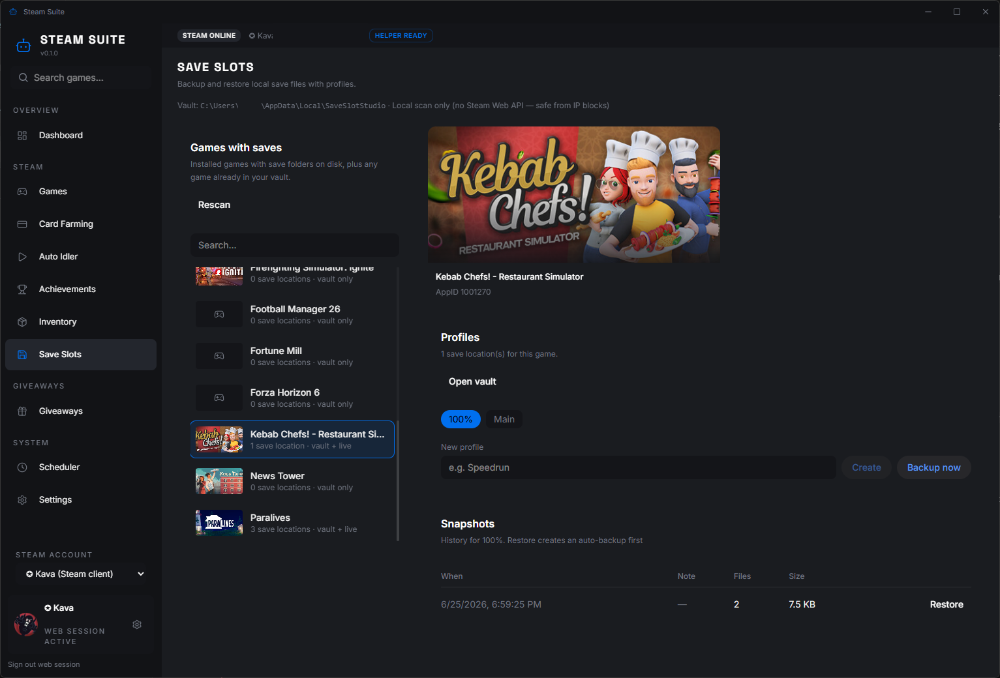

Auto Idler
Boost playtime on selected games using the native Steam utility. Tray-friendly desktop app with live process status.
Idle games, farm cards, manage achievements, back up saves, enter giveaways, and run scheduled automation — with native helpers embedded in a single portable executable.

A fast Tauri shell with a React UI and Rust backend — plus native .NET helpers for deep Steam integration.
Boost playtime on selected games using the native Steam utility. Tray-friendly desktop app with live process status.
Detect and farm trading cards. Manual, rate-limited scans protect your IP — no bulk Store requests on startup.
Profiles, snapshots, and restore with auto-backup (Aki's Law). 100% local save discovery — safe from API blocks.
Unlock, lock, and toggle achievements per game. Bulk actions when you need to fix a library fast.
Browse per-game inventory, search items, and jump to Steam Community Market listings.
SteamGifts auto-entry, win notifications, key redeem, and a task chain: farm → idle → giveaways → redeem.
Real UI from v0.1 — dark theme, sidebar navigation, and native Steam helper integration.




Native helpers talk to your local Steam client — not a cloud of scrapers.
Grab the portable Steam-Suite.exe. Helpers are embedded inside the binary.
Helpers extract once to %LOCALAPPDATA%\steam-suite\native-libs\.
Keep the Steam client running. Library data loads from local files and the utility helper.
Idle, farm, back up saves, or let the scheduler run your nightly routine.
No .NET 8 install required. Steam client must be running for most features.
Single executable with native helpers embedded. Download only from official GitHub Releases.
One command produces the same single-file release artifact.
Hot reload UI with helpers in libs/.
pnpm install $env:Path = "$env:USERPROFILE\.cargo\bin;" + $env:Path pnpm td
Builds helpers, embeds them, outputs dist/Steam-Suite.exe.
$env:SAVESLOT_STUDIO_ROOT = "C:\path\to\SaveSlot-Studio" pnpm release
libs/ folder.